Meet the philosophers whose ideas changed the way humanity understands
knowledge, ethics, politics, science, and reality.
🏛 Ancient Greek Philosophers
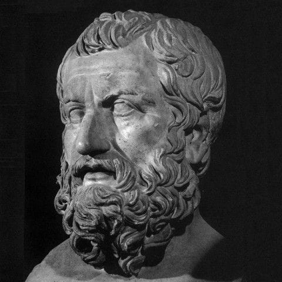
🌊 Thales of Miletus
c. 624 BC – c. 546 BC
Thales is widely regarded as the first philosopher in the Western
tradition. Rather than explaining nature through mythology, he
searched for natural causes and believed that water was the
fundamental substance of the universe.
Major Contributions
Founder of Western Philosophy
Natural Philosophy
Scientific Observation
Geometry and Astronomy
"Water is the principle of all things."
🔺 Pythagoras
c. 570 BC – c. 495 BC
Pythagoras was a Greek philosopher and mathematician who founded the
Pythagorean school. He believed that numbers and mathematical
relationships form the foundation of reality.
Major Contributions
Pythagorean Theorem
Mathematics
Harmony of the Universe
Pythagorean School
"Number is the ruler of forms and ideas."
🔥 Heraclitus
c. 535 BC – c. 475 BC
Heraclitus believed that change is the fundamental nature of reality.
He argued that everything is constantly changing and that conflict
and opposites are necessary for balance in the universe.
Major Contributions
Doctrine of Change
Unity of Opposites
Concept of the Logos
Natural Philosophy
"No man ever steps in the same river twice."
⚛ Democritus
c. 460 BC – c. 370 BC
Democritus proposed that everything in the universe is composed of
tiny, indivisible particles called atoms. His ideas anticipated
later scientific theories by many centuries.
Major Contributions
Atomism
Materialism
Natural Science
Scientific Philosophy
"Nothing exists except atoms and empty space."
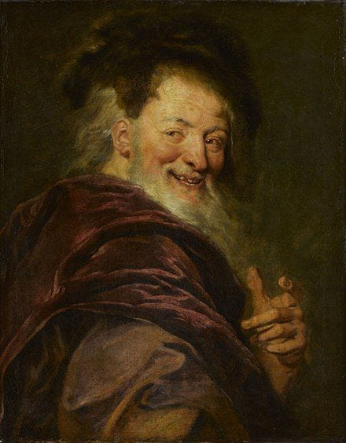
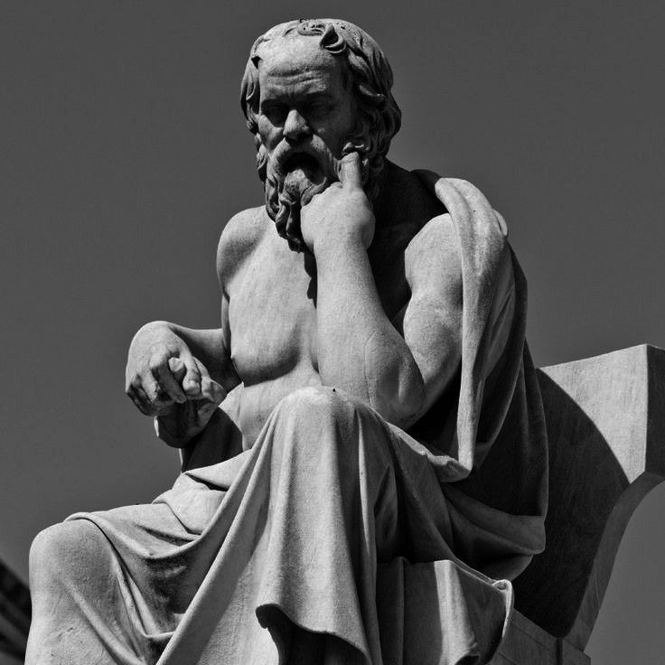
Socrates
469 BC – 399 BC
Socrates believed that wisdom begins by questioning everything.
He encouraged people to think critically instead of blindly accepting
traditions and opinions.
Major Contributions
Socratic Method
Critical Thinking
Ethics
Self-Examination
"The unexamined life is not worth living."
Plato
427 BC – 347 BC
Plato founded the Academy in Athens and explored justice,
education, politics, and the theory of forms.
Major Contributions
The Republic
Theory of Forms
Ideal State
Education
"Knowledge is the food of the soul."
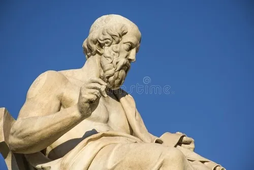
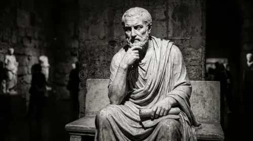
Aristotle
384 BC – 322 BC
Aristotle contributed to nearly every area of knowledge,
including logic, biology, ethics, politics, astronomy,
and metaphysics.
Major Contributions
Formal Logic
Virtue Ethics
Biology
Scientific Observation
"Knowing yourself is the beginning of all wisdom."
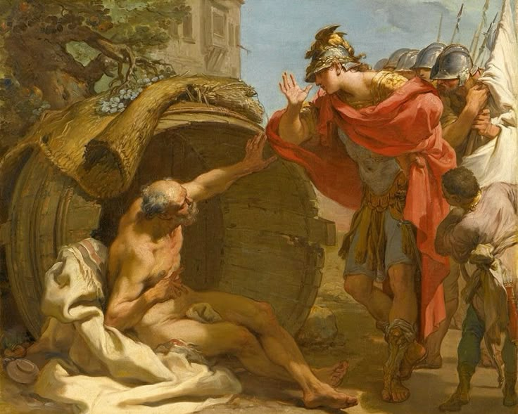
🛢 Diogenes of Sinope
c. 412 BC – c. 323 BC
Diogenes was the founder of Cynicism. He rejected wealth,
luxury, and social conventions, believing that happiness comes
from living simply and virtuously according to nature.
Major Contributions
Founder of Cynicism
Minimalism
Virtuous Living
Criticism of Social Conventions
"The foundation of every state is the education of its youth."
🕉 Indian & Eastern Philosophers
🪷 Gautama Buddha
c. 563 BC – c. 483 BC
Siddhartha Gautama, known as the Buddha, founded Buddhism after attaining enlightenment under the Bodhi tree. His teachings focus on overcoming suffering through wisdom, ethical living, and mindfulness.
Major Contributions
Founder of Buddhism
Four Noble Truths
Noble Eightfold Path
Meditation and Mindfulness
"Peace comes from within. Do not seek it without."
🦁 Mahavira
599 BC – 527 BC
Mahavira was the twenty-fourth Tirthankara of Jainism. He emphasized non-violence, truthfulness, self-discipline, and respect for all living beings.
Major Contributions
Jain Philosophy
Ahimsa (Non-violence)
Self-control
Spiritual Liberation
"All living beings long to live. None wishes to suffer."
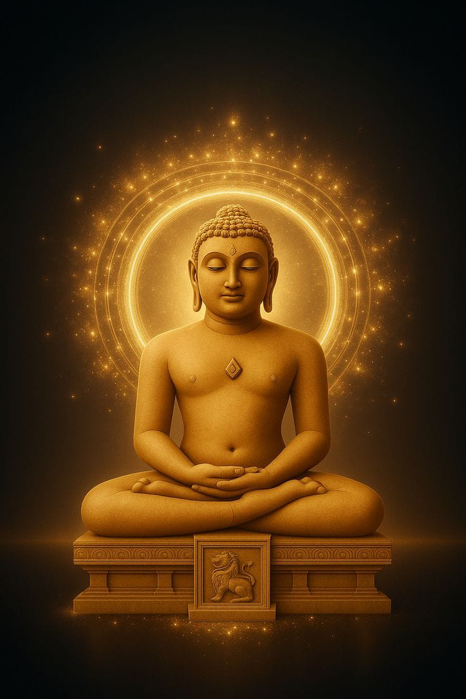
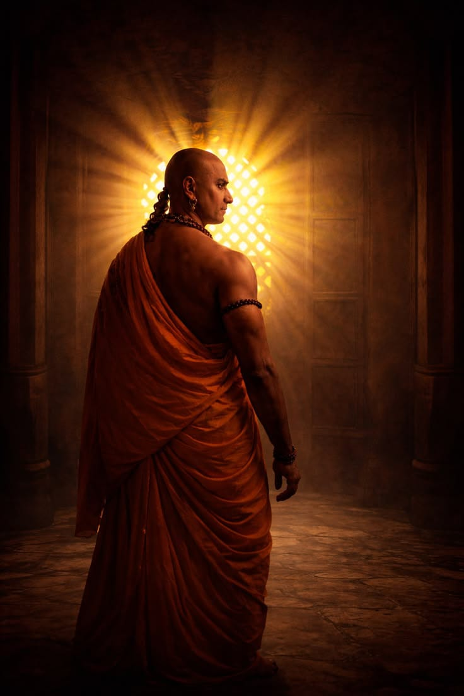
📜 Chanakya (Kautilya)
c. 375 BC – c. 283 BC
Chanakya was a philosopher, economist, strategist, and advisor to Emperor Chandragupta Maurya. His work, the Arthashastra, remains one of the greatest books on governance, diplomacy, and economics.
Major Contributions
Arthashastra
Political Philosophy
Economics
Statecraft and Diplomacy
"Education is the best friend. An educated person is respected everywhere."
🕉 Adi Shankaracharya
c. 788 AD – c. 820 AD
Adi Shankaracharya revived Hindu philosophy through Advaita Vedanta. He taught that the individual self (Atman) and the ultimate reality (Brahman) are fundamentally one.
Major Contributions
Advaita Vedanta
Commentaries on the Upanishads
Brahma Sutra Bhashya
Spiritual Unity
"Brahman alone is real; the world is an appearance."
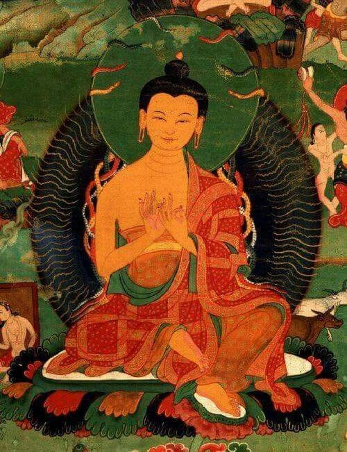
🌸 Nagarjuna
c. 150 AD – c. 250 AD
Nagarjuna was one of the greatest Buddhist philosophers. He founded the Madhyamaka school and developed the concept of Śūnyatā (Emptiness), which became central to Mahayana Buddhism.
Major Contributions
Madhyamaka Philosophy
Śūnyatā (Emptiness)
Middle Way
Mahayana Buddhism
"There is not the slightest difference between samsara and nirvana."
☯ Chinese Philosophers
☯ Confucius
551 BC – 479 BC
Confucius was a Chinese philosopher and teacher whose ideas shaped
Chinese civilization for over two thousand years. He believed that
education, moral character, respect for family, and good leadership
were the foundations of a peaceful society.
Major Contributions
Confucianism
Ethics and Morality
Education for Everyone
Good Governance
"It does not matter how slowly you go as long as you do not stop."
🌌 Lao Tzu
Traditionally 6th Century BC
Lao Tzu is traditionally regarded as the founder of Taoism.
He taught that people should live in harmony with nature,
avoid unnecessary struggle, and follow the natural flow of life,
known as the Tao.
Major Contributions
Taoism (Daoism)
Tao Te Ching
Wu Wei (Effortless Action)
Harmony with Nature
"The journey of a thousand miles begins with one step."
🦋 Zhuangzi
369 BC – 286 BC
Zhuangzi expanded Taoist philosophy through stories and parables.
He believed that true wisdom comes from freedom of thought,
simplicity, and living in harmony with the changing world.
Major Contributions
Taoist Philosophy
Freedom of Mind
Natural Living
Philosophical Parables
"Happiness is the absence of the striving for happiness."
⚖ Mencius (Mengzi)
372 BC – 289 BC
Mencius was one of Confucius' greatest followers. He argued that
human nature is fundamentally good and that people flourish through
education, compassion, and just government.
Major Contributions
Development of Confucianism
Human Nature is Good
Benevolent Government
Moral Education
"The great man is he who does not lose his child's heart."
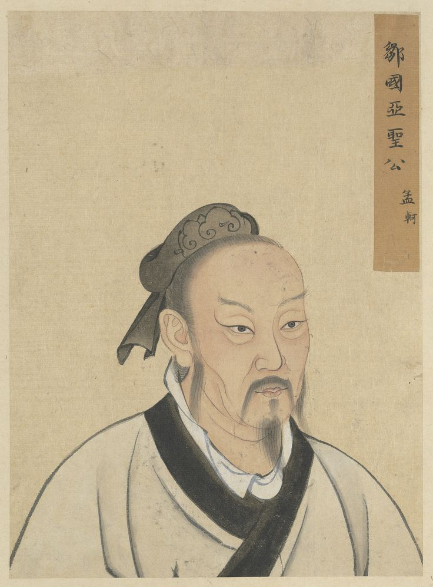
💡 Enlightenment & Modern Philosophers
📖 René Descartes
1596 – 1650
René Descartes was a French philosopher and mathematician often called
the Father of Modern Philosophy. He argued that reason is the foundation
of knowledge and introduced systematic doubt as a method of inquiry.
Major Contributions
Father of Modern Philosophy
Rationalism
Mind–Body Dualism
Analytical Geometry
"I think, therefore I am."
🔓 John Locke
1632 – 1704
John Locke argued that the human mind begins as a blank slate and
that knowledge comes through experience. His political ideas greatly
influenced democracy and modern human rights.
Major Contributions
Empiricism
Natural Rights
Social Contract
Liberalism
"Where there is no law, there is no freedom."
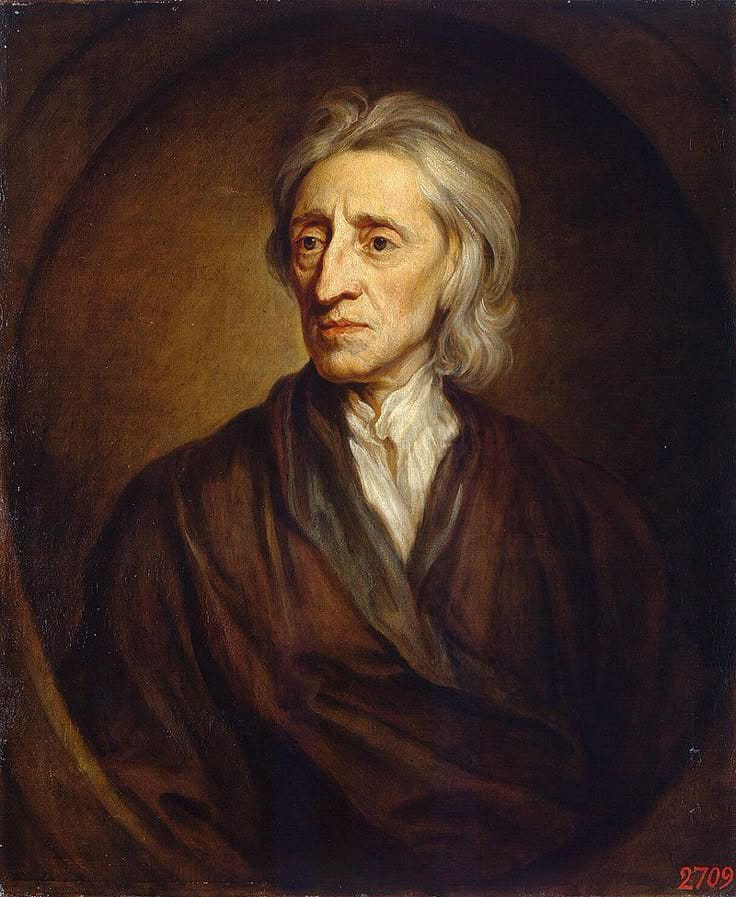
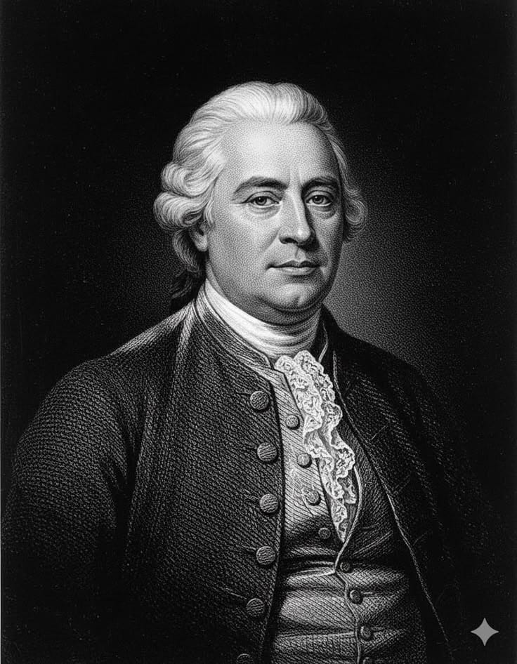
🔍 David Hume
1711 – 1776
David Hume was a Scottish philosopher who emphasized observation,
experience, and skepticism. His work transformed philosophy,
psychology, and the scientific method.
Major Contributions
Empiricism
Skepticism
Philosophy of Mind
Theory of Causation
"Reason is, and ought only to be, the slave of the passions."
💡 Immanuel Kant
1724 – 1804
Immanuel Kant revolutionized philosophy by examining how the mind
shapes experience. He also developed one of history's most influential
ethical theories based on duty and universal moral principles.
Major Contributions
Critique of Pure Reason
Categorical Imperative
Epistemology
Moral Philosophy
"Sapere aude! Have courage to use your own understanding."
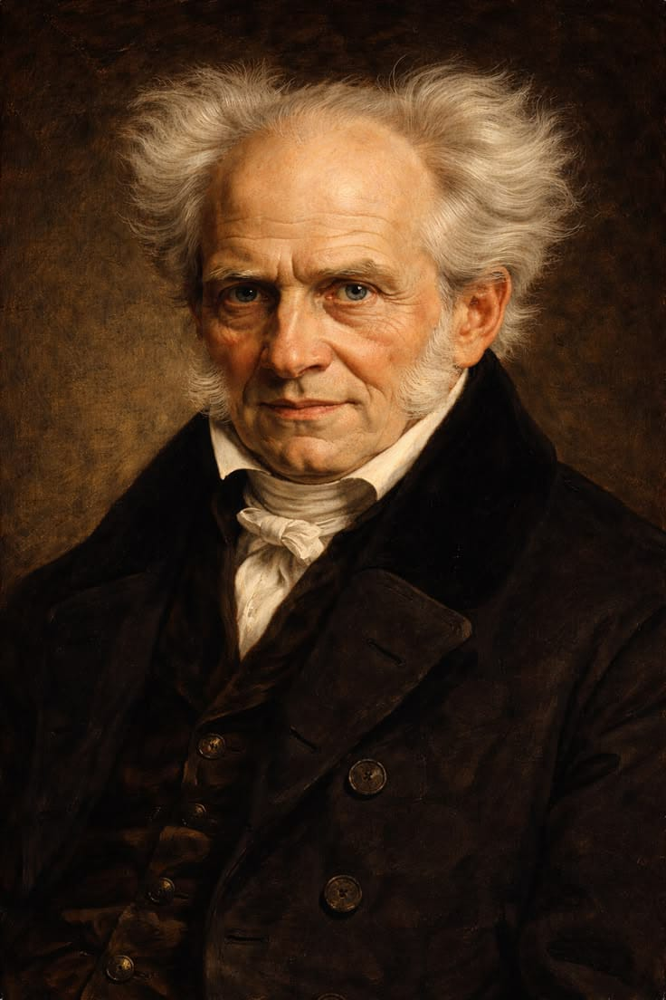
⚫ Arthur Schopenhauer
1788 – 1860
Schopenhauer believed that much of human suffering comes from endless
desire. His philosophy influenced psychology, literature, and later
thinkers such as Friedrich Nietzsche.
Major Contributions
The World as Will and Representation
Pessimism
Will as Reality
Influence on Existentialism
"Compassion is the basis of morality."
⚒ Karl Marx
1818 – 1883
Karl Marx analyzed society through economics and class struggle.
His ideas shaped political philosophy, sociology, and world history.
Major Contributions
Historical Materialism
Communism
Critique of Capitalism
Class Struggle
"The philosophers have only interpreted the world; the point is to change it."
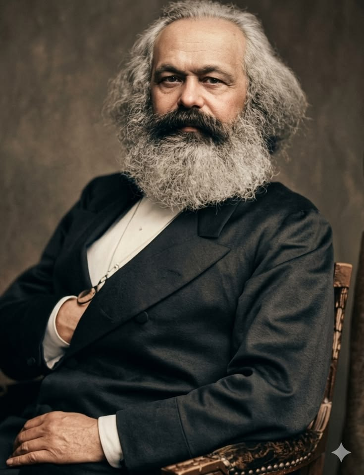
⚡ Friedrich Nietzsche
1844 – 1900
Nietzsche challenged traditional morality and encouraged individuals
to create their own values through courage, creativity, and self-overcoming.
Major Contributions
Will to Power
Übermensch
Critique of Morality
Existential Thought
"He who has a why to live can bear almost any how."
🌍 Jean-Paul Sartre
1905 – 1980
Sartre argued that people are radically free and must take
responsibility for the choices they make. His work became central
to existentialism.
Major Contributions
Existentialism
Freedom
Responsibility
Phenomenology
"Man is condemned to be free."
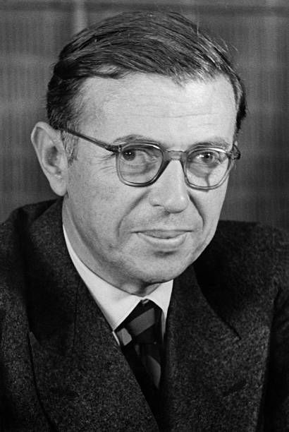
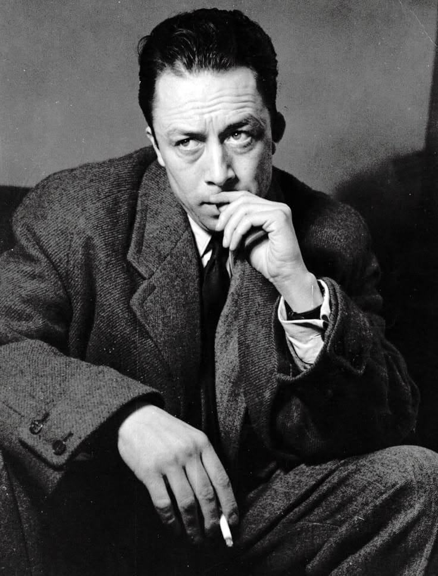
🎭 Albert Camus
1913 – 1960
Albert Camus explored the philosophy of the absurd, arguing that
although life may have no inherent meaning, humans can still live
with dignity, freedom, and purpose.
Major Contributions
Absurdism
The Myth of Sisyphus
The Stranger
Revolt and Freedom
"The struggle itself toward the heights is enough to fill a man's heart."
🧠 Bertrand Russell
1872 – 1970
Bertrand Russell was a British philosopher, mathematician, and Nobel
Prize winner. He helped shape analytic philosophy and promoted logic,
science, and peace.
Major Contributions
Analytic Philosophy
Mathematical Logic
Philosophy of Language
Pacifism
"The good life is one inspired by love and guided by knowledge."
Every Great Idea Begins With a Question
Although these philosophers lived centuries apart, each one challenged
humanity to think more deeply about truth, justice, happiness,
knowledge, and existence. Their ideas continue to influence
psychology, politics, science, economics, and artificial intelligence.